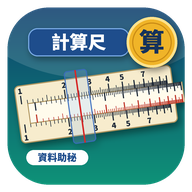

拖曳定尺＝整把尺移動 拖曳滑尺＝只動滑尺 拖曳紅色髮線或上下把手＝移動游標 滾輪／兩指＝放大縮小（越放大越精確）
📏游標讀數 （對數刻度只顯示有效數字，小數點位置要自己判斷，和真的計算尺一樣）
🗣計算示範：輸入算式，小柯一步一步移動計算尺給你看
✍讀尺練習
依題型隨機出題，自己在計算尺上算出答案後輸入；誤差在容許範圍內算答對。按「看示範」小柯會帶你做一次，但該題不計分。成績存在這台裝置的瀏覽器裡。

資料助秘計算尺線上版拖曳定尺＝整把尺移動 拖曳滑尺＝只動滑尺 拖曳紅色髮線或上下把手＝移動游標 滾輪／兩指＝放大縮小（越放大越精確）
依題型隨機出題，自己在計算尺上算出答案後輸入；誤差在容許範圍內算答對。按「看示範」小柯會帶你做一次，但該題不計分。成績存在這台裝置的瀏覽器裡。